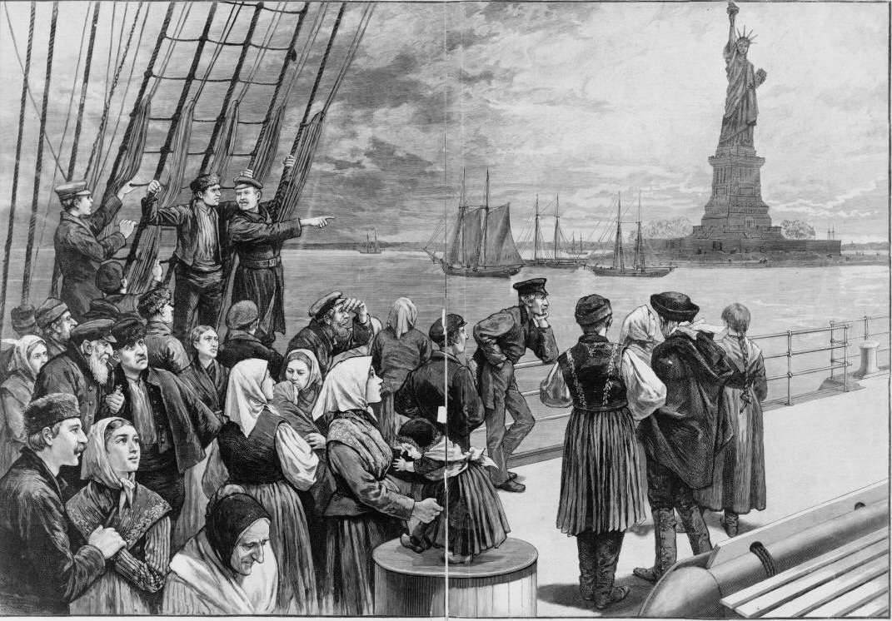

Irish Immigration as 1st Wave Europeans
Who was Moving?
Irish Immigrants, coming from the 1st wave of european immigration
When did they migrate?
Mostly between the time period of 1845 and 1849, however the earliest records show Irish immigration arriving in the US or the regions in the US as early as the 1500s, while in the years of 1604-1630 many Irish immigrated to the Virginia and Newfoundland (Pronounced Newfinland) Colonies
Where did they come from?
Provinces and cities in Ireland, mostly Ulster, Munster, Connacht, and Dublin
Where did they migrate to?
New York City, Texas, Charleston SC, Savannah SC, New Orleans, Boston, Philadelphia, Pittsburgh, Chicago, San Francisco, Just to name a few
